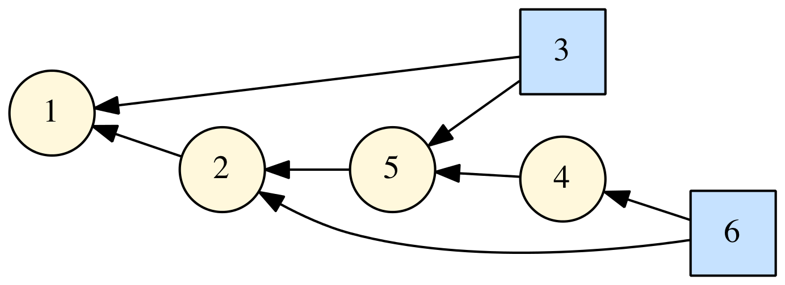

daglib
Overview


DAGLIB is a modern Fortran module for creating and manipulating directed acyclic graphs (DAGs). It includes a toposort feature, and also the ability to generate files in the GraphViz "dot" notation.
Building
A Fortran Package Manager manifest file is included, so that the library and tests cases can be compiled with FPM. For example:
fpm build --profile release
fpm test --profile release
By default, the library is built with single precision (int32) integer values. Explicitly specifying the integer kind can be done using the following processor flag:
| Preprocessor flag | Kind | Number of bytes |
|---|---|---|
INT8 |
integer(kind=int8) |
1 |
INT16 |
integer(kind=int16) |
2 |
INT32 |
integer(kind=int32) |
4 |
INT64 |
integer(kind=int64) |
8 |
For example, to build a long integer version of the library:
fpm build --profile release --flag "-DINT64"
Example
A simple example is shown below:
program dag_example
use dag_module
implicit none
type(dag) :: d
integer,dimension(:),allocatable :: order
integer :: istat
integer :: i
integer,parameter :: n_nodes = 6
character(len=*),parameter :: filetype = 'pdf'
! create a dag:
call d%set_vertices(n_nodes)
call d%set_edges(2,[1]) ! 2 depends on 1
call d%set_edges(3,[5,1]) ! 3 depends on 5 and 1
call d%set_edges(4,[5]) ! 4 depends on 5
call d%set_edges(5,[2]) ! 5 depends on 2
call d%set_edges(6,[2,4]) ! 6 depends on 2 and 4
! toposort:
call d%toposort(order,istat)
! define some styles for the GraphViz output:
do i = 1, n_nodes
if (i==3 .or. i==6) then
call d%set_vertex_info(i,attributes='shape=square,fillcolor="SlateGray1",style=filled')
else
call d%set_vertex_info(i,attributes='shape=circle,fillcolor="cornsilk",style=filled')
end if
end do
! generate the GraphViz output:
call d%save_digraph('test.dot','RL',300)
call d%destroy()
call execute_command_line('dot -Tpdf -o test.pdf test.dot')
end program dag_example
This program produces the toposort order:
order = [1, 2, 5, 3, 4, 6]
and the image file:

Documentation
- The API documentation for the current
masterbranch can be found here. This is generated by processing the source files with FORD.
License
This library is released under a BSD-3 license.
See also
- dag (a fork of this project)